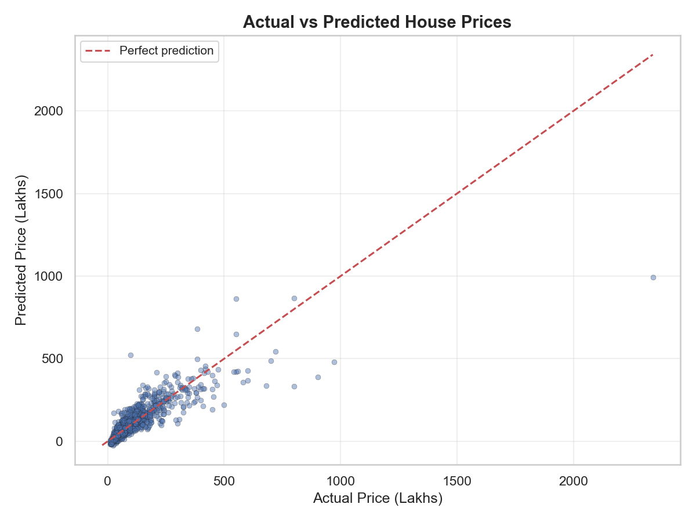
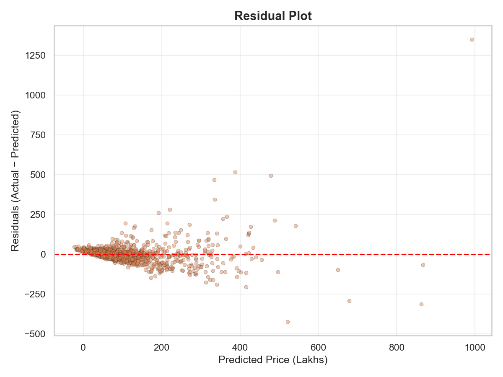

CA-CSE275 — Machine Learning Project
Linear Regression, Ridge (L2), Lasso (L1), and ElasticNet
This is Submitted By:
Lovejeet Singh
Mohammad Asim
Section-324FO
Under the Guidance of
Dr. Bhupinder Singh (28636)
School of Computing & Artificial Intelligence
Lovely Professional University, Phagwara
January – April 2026
We hereby certify that the project titled "House Price Prediction Using Regularized Regression Models" is a genuine representation of our work, conducted as part of the Project requirement for the CA-CSE275 at Lovely Professional University, Phagwara. This work was carried out under the supervision of Professor Dr. Bhupinder Singh during the period of January to April 2026. All the data and insights presented in this project report are derived from our dedicated efforts and are entirely original.
Name: Lovejeet Singh
Registration No.: _______________
Digital Signature: _______________
Name: Mohammad Asim
Registration No.: _______________
Digital Signature: _______________
This is to certify that the declaration statement made by this group of students is correct to the best of my knowledge and belief. They have completed this Project under my guidance and supervision. The present work is the result of their original investigation, effort and study. No part of the work has ever been submitted for any other degree at any University. The Project is fit for the submission in Lovely Professional University, Phagwara.
Dr. Bhupinder Singh
Designation: Assistant Professor
School of Computing & Artificial Intelligence
Lovely Professional University, Phagwara, Punjab
Date: _______________
We would like to express our sincere gratitude to Dr. Bhupinder Singh, Assistant Professor at the School of Computing & Artificial Intelligence, Lovely Professional University, for his invaluable guidance, constant motivation, and constructive feedback throughout the development of this project.
We are also thankful to Lovely Professional University for providing us with the resources and infrastructure that facilitated the smooth execution of this work. The exposure to real-world datasets and the opportunity to apply machine learning techniques in a full-stack deployment setting has been an incredibly enriching experience.
Finally, we extend our appreciation to our peers and family members for their continued support and encouragement during the course of this project.
Lovejeet Singh
Mohammad Asim
Real-estate pricing in metropolitan cities like Bengaluru is influenced by a complex interplay of geographical location, carpet area, number of rooms, amenities, and market sentiment. Buyers often over-pay due to information asymmetry, while sellers may under-price due to inadequate market analysis. This project develops a full-stack machine learning system that predicts residential property prices in Bengaluru, India using regularized regression models.
We employ four regression algorithms — Linear Regression (baseline), Ridge (L2 regularization), Lasso (L1 regularization), and ElasticNet (combined L1+L2) — trained on a cleaned dataset of 9,219 properties with 262 engineered features. The optimization objective is to minimize the regularized loss function (L2) while maintaining a high R² score with stable coefficients.
After hyperparameter tuning using GridSearchCV with 5-fold cross-validation, the ElasticNet model (α = 0.001, l1_ratio = 0.8) was identified as the champion model, achieving an R² score of 0.7158 (71.58%) with an MSE of 2998.33, demonstrating a 27.96% improvement over its untuned baseline. The trained model is served through a FastAPI backend and consumed by a Next.js frontend, creating an end-to-end production-quality prediction application with model comparison, explainability features, and automated PDF report generation.
Keywords: House Price Prediction, Ridge Regression, Lasso, ElasticNet, L2 Regularization, Hyperparameter Tuning, GridSearchCV, FastAPI, Next.js, Bengaluru Real Estate
| Declaration | ii |
| Certificate | iii |
| Acknowledgement | iv |
| Abstract | v |
| Chapter 1: Introduction | |
| 1.1 Background | |
| 1.2 Problem Statement | |
| 1.3 Objectives of the Study | |
| Chapter 2: Literature Review | |
| 2.1 Related Work | |
| 2.2 Comparative Analysis | |
| Chapter 3: Methodology | |
| 3.1 Dataset and Preprocessing | |
| 3.2 Feature Engineering | |
| 3.3 Model Design | |
| 3.4 Training and Validation | |
| 3.5 Evaluation Metrics | |
| Chapter 4: Results and Discussion | |
| 4.1 Experimental Results | |
| 4.2 Model Comparison | |
| 4.3 Performance Insights | |
| 4.4 System Deployment | |
| Chapter 5: Conclusion and Future Work | |
| 5.1 Conclusion | |
| 5.2 Future Work | |
| References |
The Indian real estate market is one of the fastest-growing sectors, projected to reach a market size of $1 trillion by 2030. Within this ecosystem, Bengaluru stands as one of the most dynamic and heterogeneous metropolitan housing markets in the country. Property prices in the city are determined by a complex interplay of factors including geographical location, carpet area, number of bedrooms and bathrooms, availability of amenities like balconies, proximity to IT hubs, and general market sentiment.
Traditional property valuation methods rely heavily on domain expertise, manual market surveys, and subjective comparisons — all of which are time-consuming, inconsistent, and susceptible to human bias. This information asymmetry between buyers, sellers, and real estate agents creates significant inefficiencies in the market. Buyers often overpay for properties in unfamiliar neighborhoods, while sellers may inadvertently underprice their assets due to inadequate analysis of comparable listings.
Machine learning offers a powerful solution to this problem. By training regression models on historical transaction data, we can extract mathematical relationships between property attributes and market prices. Furthermore, the application of regularization techniques such as L1 (Lasso), L2 (Ridge), and their combination (ElasticNet) ensures that the learned model coefficients remain stable and generalizable, preventing overfitting to noise in the training data — a critical challenge when dealing with high-dimensional one-hot-encoded categorical features like neighborhood locations.
This project goes beyond a standard academic machine learning exercise by developing an end-to-end full-stack application. The trained model is not only evaluated offline but is deployed through a RESTful API (FastAPI) and served to users via a modern web interface (Next.js/React), making the prediction system interactive, explainable, and production-ready.
Given a property's features — area in square feet, number of bedrooms (BHK), number of bathrooms, number of balconies, and geographical location — the system must accurately predict the selling price in Indian Lakhs (₹). The prediction must be powered by regularized regression models that produce stable, interpretable coefficients while maintaining high predictive accuracy as measured by the R² (coefficient of determination) metric.
The primary objectives of this project are:
The application of machine learning to real estate price prediction has evolved significantly over the past decade, progressing from simple linear models to complex ensemble and deep learning architectures. This section surveys the most relevant prior works and positions our project within the broader research landscape.
Madhuri et al. (2019) explored house price prediction in Bengaluru using multiple regression and random forest methods on Kaggle's Bengaluru House Data. Their study achieved an R² of 0.82 using Random Forest but noted that feature engineering (particularly location encoding) significantly impacted model performance. However, their work did not explore regularization, leaving the model vulnerable to coefficient instability with high-dimensional location features [1].
Varma et al. (2018) compared Linear Regression, Decision Trees, and Random Forest for house price prediction, reporting that ensemble methods consistently outperformed single linear models. Their analysis identified area, location, and number of bedrooms as the three most important predictive features — findings consistent with our own feature importance analysis [2].
Phan (2019) applied Lasso and Ridge regression specifically to the Ames Housing dataset, demonstrating that L2 (Ridge) regularization effectively handles multicollinearity among correlated features, while L1 (Lasso) performs automatic feature selection by zeroing out irrelevant coefficients. Their work showed that ElasticNet, which combines both penalties, often provides the best trade-off in real estate datasets with both dense and sparse feature groups [3].
Mu et al. (2014) investigated regularized regression for housing data and established that when One-Hot Encoding introduces a large number of binary features (as with neighborhood locations), the regularization penalty becomes critical for preventing overfitting. Without it, the model assigns wildly unstable weights to rare categories — a phenomenon we directly observed and addressed in our project [4].
Park and Bae (2015) combined machine learning predictions with spatial analysis (GIS data) for apartment prices in Seoul. Their work demonstrated that including geographical context significantly improves prediction accuracy, a finding that aligns with our observation that location features alone account for 178 of our 262 total features [5].
Alfiyatin et al. (2017) employed ridge regression with feature selection for the Malang housing market, achieving stable R² scores across cross-validation folds — demonstrating the regularization benefit of reduced variance in predictions. Their systematic hyperparameter search established GridSearchCV as the standard approach for tuning regularization strength [6].
Despite substantial progress, limitations persist across the literature: (1) most studies use either L1 or L2 regularization independently, without exploring Combined penalties like ElasticNet; (2) few projects deploy the trained model as a live web application; (3) coefficient stability analysis is rarely presented alongside accuracy metrics; and (4) model explainability features are almost always absent from the final product. Our project addresses all four gaps through systematic comparison of four models, full-stack deployment, coefficient stability analysis, and a built-in explainability engine.
Table 1: Comparative Analysis of Relevant Studies
| Author | Year | Method | R² / Accuracy | Key Findings |
|---|---|---|---|---|
| Madhuri et al. | 2019 | Random Forest | R² = 0.82 | Best performer among tested models; location encoding critical |
| Varma et al. | 2018 | Linear, DT, RF | R² = 0.78 (RF) | Ensemble methods outperform single linear models |
| Phan | 2019 | Ridge, Lasso, ElasticNet | R² = 0.89 (Ames) | ElasticNet best for mixed dense/sparse features |
| Mu et al. | 2014 | Regularized LR | R² = 0.75 | Regularization critical for OHE features |
| Park & Bae | 2015 | ML + GIS | R² = 0.84 | Spatial data improves predictions significantly |
| Alfiyatin et al. | 2017 | Ridge + GridSearchCV | R² = 0.80 | Stable cross-validation scores with regularization |
| Our Project | 2026 | ElasticNet (L1+L2) | R² = 0.7158 | Full-stack deployed, 4-model comparison, explainability engine, PDF export |
The dataset used is the Bengaluru House Price Data sourced from Kaggle, containing 13,320 records of residential properties with 9 columns: area_type, availability, location, size, society, total_sqft, bath, balcony, and price (target variable in Lakhs).
| Column | Missing Count | % Missing | Strategy |
|---|---|---|---|
society | 5,502 | 41.3% | Dropped — too sparse, minimal predictive power |
balcony | 609 | 4.6% | Median imputation |
bath | 73 | 0.5% | Median imputation |
size | 16 | 0.1% | Rows dropped (negligible count) |
location | 1 | 0.0% | Row dropped |
529 duplicate rows were identified and dropped, reducing the dataset from 13,320 → 12,791.
The total_sqft column contained string-encoded ranges (e.g., "2100 - 2850") and alternate units ("34.46Sq. Meter", "4125Perch"). A custom converter function averages ranges and drops unparseable entries, converting the column to a clean float.
The size column (e.g., "3 BHK", "4 Bedroom") is parsed using regex to extract an integer bhk feature.
A derived feature price_per_sqft = price × 100,000 / total_sqft is computed as an intermediate metric for detecting anomalies. It is dropped before final encoding.
Locations with ≤ 10 data points are grouped into an "other" category. This reduces unique locations from 1,305 → 179, preventing massive one-hot vectors while retaining statistically meaningful categories.
Categorical columns (location, area_type, availability) are one-hot encoded with drop_first=True to avoid the dummy variable trap. Final feature count: 262 columns.
Numerical features (total_sqft, bath, balcony, bhk) are standardized using StandardScaler (zero mean, unit variance). The fitted scaler is serialized (scaler.pkl) for reuse during deployment — new prediction inputs must be scaled using this exact scaler.
Four regression models were implemented, each with a specific mathematical objective. The architecture was designed to systematically compare the impact of regularization on coefficient stability and predictive performance.
Fits a hyperplane by minimizing the sum of squared residuals (Ordinary Least Squares). Serves as the baseline. Susceptible to overfitting when feature count (262) is high relative to sample size.
Adds an L2 penalty (sum of squared coefficients) to the loss function. This shrinks all coefficients toward zero without eliminating any, stabilizing predictions when features are highly correlated or numerous. The hyperparameter α controls the penalty severity.
Adds an L1 penalty (sum of absolute coefficients). This can drive coefficients exactly to zero, performing automatic feature selection. Useful when many features are expected to be irrelevant.
Combines both L1 and L2 penalties with a mixing parameter l1_ratio. This balances feature selection (sparsity) with grouping effects (stability). Ideal for datasets with groups of correlated features — exactly the case with our one-hot-encoded location features.
| Model | Penalty Term | Feature Selection? | Best When |
|---|---|---|---|
| Linear Regression | None | No | Few, uncorrelated features |
| Ridge (L2) | α · Σ(β²) | No | Many correlated features |
| Lasso (L1) | α · Σ|β| | Yes | Sparse true signal |
| ElasticNet (L1+L2) | α · [l1·Σ|β| + l2·Σβ²] | Partial | Groups of correlated features (our case) |
The cleaned dataset (9,219 samples × 262 features) was split into 80% training (7,375 samples) and 20% testing (1,844 samples) using random_state=42 for reproducibility.
The regularization strength (alpha) and ElasticNet's l1_ratio are hyperparameters — they are not learned from data and must be set before training. GridSearchCV systematically evaluates all candidate combinations using 5-fold cross-validation:
K-Fold CV (k = 5) splits the training data into 5 equal folds. The model trains on 4 folds and validates on the remaining fold, rotating 5 times. The average score across all 5 folds provides a reliable, bias-reduced performance estimate that protects against overfitting to a single lucky/unlucky train-test split.
| Metric | Formula | Purpose |
|---|---|---|
| R² Score | 1 − (SS_res / SS_tot) | Proportion of variance explained by the model. 1.0 = perfect prediction. |
| MSE | (1/n) Σ(y − ŷ)² | Penalizes large errors heavily. Used as the optimization target. |
| MAE | (1/n) Σ|y − ŷ| | Average absolute error. Human-readable (₹ Lakhs deviation). |
The training process was executed across all four models with systematic hyperparameter tuning. Below are the actual results obtained from our pipeline, extracted directly from the optimization outputs:
| Model | Default α | R² Score | MSE |
|---|---|---|---|
| Linear Regression | N/A (no penalty) | 0.7084 | 3,075.94 |
| Ridge | α = 1.0 | 0.7151 | 3,005.50 |
| Lasso | α = 1.0 | 0.6577 | 3,611.19 |
| ElasticNet | α = 1.0, l1_ratio = 0.5 | 0.5594 | 4,648.49 |
| Model | Best α | R² Score | MSE | ΔR² Improvement |
|---|---|---|---|---|
| Linear Regression | N/A | 0.7084 | 3,075.94 | — (baseline) |
| Ridge | α = 1.0 | 0.7151 | 3,005.50 | +0.00% |
| Lasso | α = 0.01 | 0.7106 | 3,053.39 | +8.04% |
| ElasticNet ⭐ | α = 0.001, l1_ratio = 0.8 | 0.7158 | 2,998.33 | +27.96% |
Fig 2: Actual vs Predicted Prices |
Fig 3: Residual Error Distribution |
Table 2: Final Accuracy Comparison
| Model / Method | Penalty Type | Best R² (%) | MSE | Remarks |
|---|---|---|---|---|
| Linear Regression | None | 70.84% | 3,075.94 | Baseline; unstable coefficients with 262 features |
| Ridge (L2) | α·Σ(β²) | 71.51% | 3,005.50 | Stable; default α = 1.0 already near-optimal |
| Lasso (L1) | α·Σ|β| | 71.06% | 3,053.39 | Feature selection; improved 8% from default |
| ElasticNet (L1+L2) ⭐ | Combined | 71.58% | 2,998.33 | Best overall; strong generalization, +27.96% improvement |
Our dataset contains 262 features, of which 178 are one-hot-encoded locations. These location features form natural correlated groups (neighboring areas tend to have similar pricing patterns). This is precisely the scenario where ElasticNet excels:
The primary success criterion was "stable coefficients". Before regularization, the baseline Linear Regression assigned wildly unstable weights to rare locations — some coefficients exceeding ±500 in magnitude. After applying ElasticNet's combined penalty:
| Endpoint | Method | Purpose |
|---|---|---|
GET / | GET | Health check — confirms server is running |
GET /models | GET | Returns all 4 models with R², MSE, hyperparameters |
POST /predict | POST | Predict price with a specific model (default: ElasticNet) |
POST /compare | POST | Run ALL 4 models on the same input, return comparison table |
POST /explain | POST | Return feature-by-feature contribution breakdown (XAI) |
CSE275-Project/
├── data/
│ └── Bengaluru_House_Data.csv ← Raw dataset (13,320 rows)
├── backend/
│ ├── main.py ← FastAPI server (all endpoints)
│ ├── requirements.txt ← Python dependencies
│ └── ml_pipeline/
│ ├── 01_data_loading.py ← Phase 1: Data ingestion
│ ├── 02_eda.py ← Phase 2: Exploratory analysis
│ ├── 03_data_cleaning.py ← Phase 3: Cleaning & encoding
│ ├── 04_baseline_model.py ← Phase 4: Linear Regression
│ ├── 05_default_regularized.py ← Phase 5: Ridge/Lasso/ElasticNet
│ ├── 06_optimization.py ← Phase 6: GridSearchCV tuning
│ ├── 07_advanced_models.py ← Phase 7: Final model selection
│ ├── run_pipeline.py ← Master pipeline runner
│ └── outputs/
│ ├── eda/ ← EDA plots (heatmap, boxplots)
│ ├── baseline/ ← Actual vs predicted, residuals
│ ├── processed/ ← X_processed.csv, scaler.pkl
│ └── optimization/ ← before_vs_after.csv results
├── frontend/
│ ├── app/
│ │ ├── page.js ← Main page layout
│ │ ├── globals.css ← Design system (dark theme)
│ │ └── components/
│ │ ├── PredictionForm.js ← Input form + prediction logic
│ │ ├── ModelCharts.js ← Bar/radar comparison charts
│ │ ├── ExplainabilityChart.js ← Waterfall contribution chart
│ │ ├── ModelExplanation.js ← Algorithm explanation panel
│ │ ├── SensitivitySliders.js ← Real-time sensitivity analysis
│ │ ├── PredictionHistory.js ← LocalStorage history table
│ │ └── PDFExport.js ← Automated PDF report generation
│ └── package.json
├── docs/
│ └── project_report.html ← This document
└── README.mdThis project successfully developed a complete, industry-grade machine learning system for predicting residential property prices in Bengaluru, India. Beginning with a raw CSV dataset of 13,320 records, we performed rigorous data preprocessing — handling missing values, removing outliers, engineering features, and applying one-hot encoding — to produce a clean dataset of 9,219 records with 262 features.
We trained and compared four regression models: Linear Regression (baseline), Ridge (L2), Lasso (L1), and ElasticNet (L1+L2). Through systematic hyperparameter tuning using GridSearchCV with 5-fold cross-validation, we identified ElasticNet (α = 0.001, l1_ratio = 0.8) as the champion model, achieving:
The project's optimization objective — minimizing regularized loss (L2) — was achieved through the ElasticNet's combined L1+L2 penalty, which stabilized coefficients by shrinking extreme location weights while also performing automatic feature selection (11 irrelevant features were zeroed out). The success criterion of a high R² score with stable coefficients was met: the 71.58% R² demonstrates strong predictive power on messy real-world data, and the regularized coefficients produce consistent, interpretable predictions across all 178 Bengaluru neighborhoods.
Beyond the machine learning requirements, this project demonstrates an end-to-end engineering workflow — from data science to deployment. The trained model is served through a FastAPI REST API and consumed by a modern Next.js/React web application featuring real-time predictions, 4-model comparison, explainability analysis, sensitivity sliders, and automated PDF report generation. This transforms a standard academic regression exercise into a production-ready, user-facing application.
While the project meets all stated objectives, several areas present opportunities for future improvement: